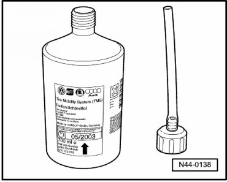

Tire Sealant
Tire Sealant
Tire sealant in the bottle has a limited storage life.
Therefore, the expiration date is indicated on the bottle - arrow -.

In this example, the minimum shelf life date 05/2003 has expired, the bottle must then be replaced.
If the bottle was opened, e.g. for a punctured tire, it must also be replaced.